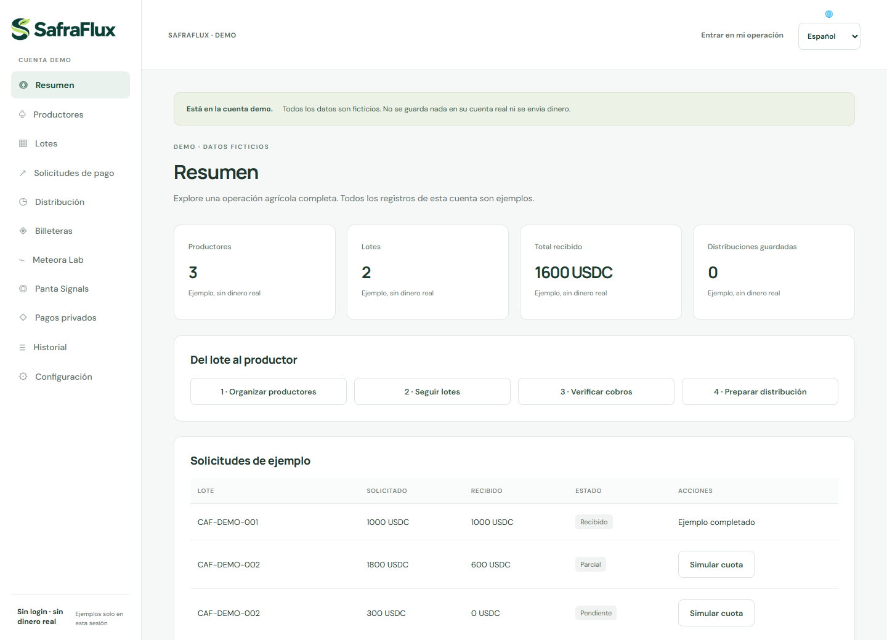

Organizar el lote
Productores, cantidades entregadas y contexto de la venta en un mismo flujo.
MUJERES QUE CONSTRUYEN · BRASIL
Somos SheBuilds. Unimos nuestras perspectivas para transformar problemas reales en soluciones con propósito.
Beatriz, Sonia & Olivia
Construyendo juntas desde tres lugares de Brasil.
01 / NUESTRA ESENCIA
Somos Beatriz, Sonia y Olivia. SheBuilds reúne desarrollo de producto, análisis de sistemas y estrategia de negocio para transformar necesidades concretas en soluciones que las personas puedan comprender y usar.
Trabajamos remotamente desde Pernambuco, Brasília y São Paulo. Nuestra experiencia en el agro es anterior a SafraFlux: Beatriz y Sonia construyeron juntas proyectos premiados y presentaron RaízesGo en CNPA 2024. Olivia aporta su trayectoria en innovación, aceleración y modelos de negocio, además de conexiones en comunidades de agro y café.
Empezamos por el café: una venta puede reunir el trabajo de varias familias. Nuestra pregunta es sencilla: ¿cómo conectar ese cobro con una explicación clara de la participación de cada productor?
Las personas detrás de las ideas ↗02 / NUESTRO PROYECTO DESTACADO
FINTECH · AGROTECHUna venta colectiva. Una participación clara para cada productor.
SafraFlux ayuda a los equipos financieros de cooperativas y pequeñas exportadoras de café a relacionar cobros con lotes, seguir cuotas y explicar cuánto corresponde a cada productor. USDC es el token utilizado en la integración principal de solicitudes de pago; Solana es la red utilizada para verificar esos cobros.
Demo pública con datos ficticios. Sin iniciar sesión ni dinero real.

Productores, cantidades entregadas y contexto de la venta en un mismo flujo.
Solicitudes de pago, cuotas y verificación de cobros según la red.
Registro de distribución con base y prima de calidad separados por productor.
El cálculo de distribución no envía dinero. El café es nuestro punto de partida; los beneficios y la adopción se evaluarán en pilotos.
EL PROBLEMA QUE ELEGIMOS RESOLVER
Una venta de café puede reunir varias familias, distintas cantidades y primas de calidad. El pago puede llegar en cuotas, y el recibo por sí solo no explica la participación de cada persona.
Productores, lotes, solicitudes de pago, cuotas, historial y estados individuales conectados en una rutina de rendición de cuentas.
Acceso a su propia participación después de que la cooperativa confirme el vínculo. Cantidad, base, prima y total visibles, con revisión y solicitudes de corrección.
Una solicitud de pago identificada, con referencia y código QR. Nuestro público inicial ya necesita tener una razón para usar este medio de pago.
UN EJEMPLO PARA ENTENDER
Con entregas de 60 kg y 40 kg, la distribución por cantidad resulta en 600 y 400 USDC. Con una prima del 10% y puntos de calidad de 2 y 1, el estado pasa a 615 y 385 USDC.
Ejemplo ficticio de las reglas de la demo. La calidad es declarada por la operación; la blockchain no certifica la entrega física. El cálculo no mueve fondos.
Sin prima de calidad
Sin prima de calidad
Total conservado en la distribución: 1.000 USDC
DEL RETORNO A LA EVOLUCIÓN DEL PRODUCTO
Lo que ya entregamos, el aprendizaje externo que orientó un cambio y las evidencias que queremos construir en la próxima etapa.
El retorno reveló una necesidad concreta: un área segura donde los agricultores puedan seguir la información de la venta compartida por la cooperativa.
Añadimos y mejoramos los estados individuales, el vínculo confirmado con la cooperativa y la revisión con solicitudes de corrección.
Prueba externa relatada por el equipo, con datos ficticios. Se preservan la identidad y la empresa. No representa un cliente de pago ni un piloto comercial.
Registros de productores y lotes, solicitudes de pago, cuotas, cálculo de distribución, historial, copias de seguridad y exportaciones CSV/JSON. La demo se puede explorar sin cuenta, billetera ni fondos.
La cooperativa confirma el vínculo antes de compartir. El agricultor ve los estados enviados a su cuenta y puede solicitar correcciones; las revisiones conservan el historial.
Zcash tiene una transferencia confirmada en regtest, un entorno local sin valor monetario. Las pruebas internas y esta evidencia no equivalen a una auditoría independiente ni a un pago comercial.
UNA GUÍA PARA EXPLORAR
Los recibos de la demo son simulados. La sesión no modifica cuentas reales ni consulta la blockchain para simular pagos.
TECNOLOGÍA AL SERVICIO DE LA OPERACIÓN
El valor del producto está en el flujo de trabajo. Las integraciones ayudan a identificar y verificar pagos, con responsabilidades explícitas.
Solicitudes mediante Solana Pay, referencia y código QR. La verificación en el servidor comprueba red, token, destinatario, referencia, importe y finalización a partir de la firma proporcionada por el operador.
Adaptadores para Base, Arbitrum, Ethereum L1 y HyperEVM con USDC; Tempo con pathUSD y Robinhood Chain con USDG. La asociación comercial del pago con el lote es declarada por el operador.
Cloak integra flujos privados de USDC sobre Solana. Zcash utiliza ZEC nativo y tiene evidencia local regtest. La validación financiera de Cloak en mainnet y con billeteras externas sigue pendiente.
Cloudflare Workers sostiene la aplicación, la API y la verificación de pagos. Cloudflare D1 mantiene registros aislados por cuenta, historial de revisiones y recuperación. Google/GitHub y un autenticador componen el acceso.
Beatriz lidera y desarrolla el producto. OpenAI Codex apoyó la implementación, depuración, pruebas y documentación; las bibliotecas y SDK de terceros están declarados en el repositorio de SafraFlux.
SafraFlux no guarda claves privadas de billeteras ni ofrece bridges, cambio de moneda o ejecución de Pix. Verificar una transferencia no demuestra la calidad física del café ni la asociación comercial declarada.
EXPERIMENTOS E INFRAESTRUCTURA
Laboratorio local con el SDK oficial para configurar curvas, tarifas e instrucciones. No se ha ejecutado lanzamiento de token, pool, swap ni migración.
Prototipo de consulta de mercados. Los ejemplos son ficticios; la validación con clave de API sigue pendiente.
RPC Fast Start atiende consultas del servidor en Solana mainnet. Solami es un diagnóstico público separado, de solo lectura; no es el proveedor del panel.
SafraFlux se inscribió en Crypto World’s Fair de Colosseum y en categorías complementarias. La inscripción no equivale a un premio ni a elegibilidad confirmada.
LA PRÓXIMA ETAPA
Queremos aprender de quienes ejecutan la rutina financiera y medir si el producto resuelve una necesidad recurrente.
Planeamos 14 entrevistas para entender la frecuencia del problema, las herramientas actuales y quién aprueba la adopción. Aún no son resultados alcanzados.
Validar billeteras externas, pagos financiados y Cloak en mainnet. Preparar roles compartidos por organización y revisión independiente.
Buscar dos pilotos con alcance definido para comparar esfuerzo de conciliación, comprensión de los estados, discrepancias y soporte necesario.
La hipótesis es una suscripción por organización, con implementación opcional. La demanda, el precio y el coste del servicio requieren validación; no hay clientes de pago ni ingresos confirmados.
Buscamos conversaciones con cooperativas y pequeñas exportadoras de café, orientación técnica para la validación y mentoría de negocio. Los contactos y comunidades son un punto de entrada; no son alianzas confirmadas.
Conecta con el equipo ↗03 / TRAYECTORIAS QUE SUMAN
Proyectos reconocidos en la trayectoria de nuestras integrantes. Experiencias que aportamos a lo que construimos juntas hoy.
Conectando productores rurales, compradores institucionales y logística. Construido por Beatriz y Sonia y presentado en CNPA 2024.
En el portafolio de Beatriz ↗Un MVP que combina gamificación, reciclaje y educación ambiental.
En el portafolio de Beatriz ↗Proyecto de Beatriz y Sonia para comunidades quilombolas y la preservación del Cerrado.
En el portafolio de Beatriz ↗Proyecto de educación en criptomonedas y blockchain para usuarios de Robinhood, reconocido en TechTogether Miami en 2022.
En el portafolio de Beatriz ↗Proyecto de Beatriz y Sonia con IA predictiva para reducir el desperdicio de hortalizas en la cadena de suministro.
En el portafolio de Beatriz ↗Proyecto de la trayectoria de Beatriz, con experiencias turísticas personalizadas e interactivas.
En el portafolio de Beatriz ↗RaízesGo, Frutos do Cerrado y DestinAI forman parte de la trayectoria conjunta de Beatriz y Sonia, según el relato del equipo documentado en la entrega. ReClapp, GreenHat e Infinitour forman parte de la trayectoria de Beatriz con otros equipos. Conoce más en el portafolio de Beatriz y en el portafolio de Sonia. SafraFlux es la creación conjunta de Beatriz, Sonia y Olivia.
04 / LAS CREADORAS
Detrás de cada solución hay personas que preguntan, experimentan y construyen.
COFUNDADORA · PRODUCTO & DESARROLLO
Lidera el producto y el desarrollo full-stack de SafraFlux, desde frontend y backend hasta integraciones, pruebas y publicación. Graduada en Análisis y Desarrollo de Sistemas y estudiante de Marketing, conecta tecnología, atención a las personas y experiencia en hackathons.
Explora mi portafolio ↗COFUNDADORA · ANÁLISIS DE PRODUCTO & PITCH
Coideadora de SafraFlux, con formación en Ciencias de la Computación y experiencia en análisis de sistemas y logística. Contribuye con análisis de producto, pitch y presentación, aportando los proyectos de agro premiados que construyó con Beatriz.
Explora mi portafolio ↗COFUNDADORA · ESTRATEGIA & MERCADO
Aporta experiencia en innovación, aceleración de startups, modelos de negocio y entrada al mercado. Contribuye con la estrategia y presentación de SafraFlux, además de conexiones en comunidades de agro y café para orientar la próxima etapa de descubrimiento.
Explora mi portafolio ↗05 / SIGUE EXPLORANDO
Conoce el flujo con datos ficticios
↗02Proyecto en Crypto World’s Fair 2026
↗03El acceso al código del producto requiere autorización
↗04Marca, galería y materiales de difusión
↗ 05Pitch global del equipo · en inglés
↗06Demostración técnica · en inglés
↗07Componente público para diagnóstico Solana
↗EL PRÓXIMO CAPÍTULO ES COLECTIVO
Una conversación puede ser el inicio de una colaboración.
Conecta con el equipo y conoce nuestras trayectorias.